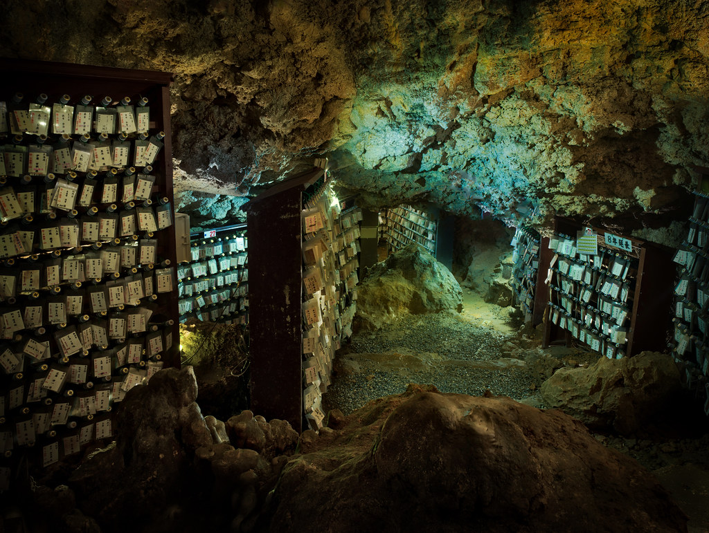
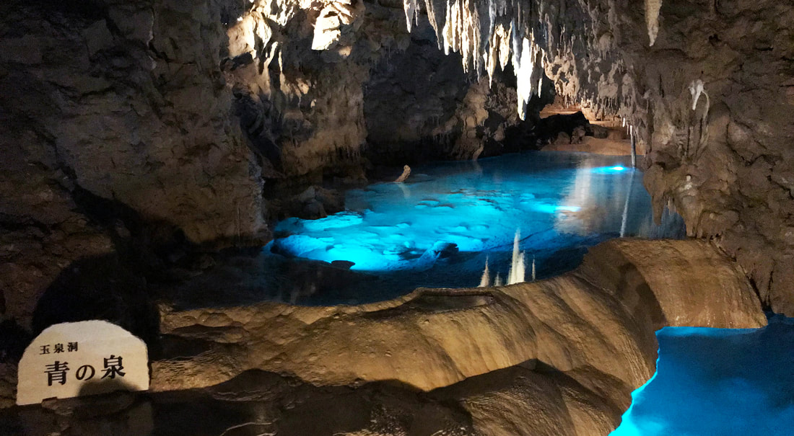

Okinawa's Mystical Caves

The Historical Significance of Okinawa's Enchanting Caves
Okinawa, known for its stunning beaches and vibrant culture, is also home to hidden caves that are steeped in history and myth. These mystical caves have long been regarded as sacred spaces, used by locals for centuries for spiritual ceremonies and offerings. Some caves are tied to Okinawan folklore, while others are known for their breathtaking formations of stalactites and stalagmites. Visiting these caves offers a journey into the island’s ancient past, providing a glimpse into its rich traditions and natural wonders.

Exploring the Magic of Okinawa’s Caves
Venturing into Okinawa’s hidden caves is an awe-inspiring experience. Many of these caves are nestled within dense forests or along the rugged coastline, providing a peaceful escape from the island's more touristy spots. Inside, the cool, damp air and the sound of dripping water create an almost otherworldly atmosphere. Some caves even feature underground rivers or pools, adding to their mystical charm. For adventurers and history lovers alike, these caves offer a chance to explore a side of Okinawa that feels untouched by time.

Beyond their beauty, Okinawa’s caves provide a serene environment perfect for reflection. Surrounded by natural rock formations and ancient energy, these spaces invite visitors to pause and absorb the tranquility. Whether you’re drawn by the island's folklore or simply seeking a quiet adventure, exploring Okinawa’s hidden caves offers a unique hidden gem experience, making them a must-visit for those looking to discover the mystical side of Japan’s southern islands.